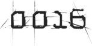

A few hours later, the remaining slots on the Scoreboard began to fill up, one after another, in rapid succession. Not with avatar names, but with IOI employee numbers. Each would appear with a score of 5,000 points (which now appeared to be the fixed value for obtaining the Copper Key); then the score would jump by another 100,000 points a few hours later, once that Sixer had cleared the First Gate. By the end of the day, the Scoreboard looked like this:
HIGH SCORES:
| 1. Parzival |
110,000 |
 |
| 2. Art3mis |
109,000 |
|
| 3. Aech |
108,000 |
|
| 4. Daito |
107,000 |
|
| 5. Shoto |
106,000 |
|
| 6. IOI-655321 |
105,000 |
|
| 7. IOI-643187 |
105,000 |
|
| 8. IOI-621671 |
105,000 |
|
| 9. IOI-678324 |
105,000 |
|
| 10. IOI-637330 |
105,000 |
|
I recognized the first Sixer employee number to appear, because I’d seen it printed on Sorrento’s uniform. He’d probably insisted that his avatar be the first to obtain the Copper Key and clear the gate. But I had a hard time believing he’d done it on his own. There was no way he was that good at Joust. Or that he knew WarGames by heart. But I now knew that he didn’t have to be. When he reached a challenge he couldn’t handle, like winning at Joust, he could just hand control of his avatar off to one of his underlings. And during the WarGames challenge he’d probably just had someone feeding him all of the dialogue via his hacked immersion rig.
Once the remaining empty slots were filled, the Scoreboard began to grow in length, to display rankings beyond tenth place. Before long, twenty avatars were listed on the Scoreboard. Then thirty. Over the next twenty-four hours, over sixty Sixer avatars cleared the First Gate.
Meanwhile, Ludus had become the most popular destination in the OASIS. Transport terminals all over the planet were spitting out a steady stream of gunters who then swarmed across the globe, creating chaos and disrupting classes on every school campus. The OASIS Public School Board saw the writing on the wall, and the decision was quickly made to evacuate Ludus and relocate all of its schools to a new location. An identical copy of the planet, Ludus II, was created in the same sector, a short distance away from the original. All students were given a day off from school while a backup copy of the planet’s original source code was copied over to the new site (minus the Tomb of Horrors code Halliday had secretly added to it at some point). Classes resumed on Ludus II the following day, and Ludus was left for the Sixers and gunters to fight over.
News spread quickly that the Sixers were encamped around a small flat-topped hill at the center of a remote forest. The tomb’s exact location appeared on the message boards that evening, along with screenshots showing the force field the Sixers had erected to keep everyone else out. These screenshots also clearly showed the skull pattern of the stones on the hilltop. In a matter of hours, the connection to the Tomb of Horrors D&D module was posted to every single gunter message board. Then it hit the newsfeeds.
All of the large gunter clans immediately banded together to launch a full-scale assault on the Sixers’ force field, trying everything they could think of to bring it down or circumvent it. The Sixers had installed teleportation disruptors, which prevented anyone from transporting inside the force field via technological means. They had also stationed a team of high-level wizards around the tomb. These magic users cast spells around the clock, keeping the entire area encased in a temporary null-magic zone. This prevented the force fields from being bypassed by any magical means.
The clans began to bombard the outer force field with rockets, missiles, nukes, and harsh language. They laid siege to the tomb all night, but the following morning, both force fields remained intact.
In desperation, the clans decided to break out the heavy artillery. They pooled their resources and purchased two very expensive, very powerful antimatter bombs on eBay. They detonated both of them in sequence, just a few seconds apart. The first bomb took down the outer shield, and the second bomb finished the job. The moment the second force field went down, thousands of gunters (all unharmed by the bomb blasts, due to the no-PvP zone) swarmed into the tomb and clogged the corridors of the dungeon below. Soon, thousands of gunters (and Sixers) had crammed into the burial chamber, all ready to challenge the lich king to a game of Joust. Multiple copies of the king appeared, one for every avatar who set foot on the dais. Ninety-five percent of the gunters who challenged him lost and were then killed. But a few gunters were successful, and at the bottom of the Scoreboard, listed after the High Five and the dozens of IOI employee numbers, new avatar names began to appear. Within a few days, the list of avatars on the Scoreboard was over a hundred names long.
Now that the area was full of gunters, it became impossible for the Sixers to put their force field back in operation. Gunters were mobbing them and destroying their ships and equipment on sight. So the Sixers gave up on their barricade, but they continued to send avatars into the Tomb of Horrors to farm copies of the Copper Key. No one could do anything to stop them.

The day after the explosion in the stacks, there was a brief story about it on one of the local newsfeeds. They showed a video clip of volunteers sifting through the wreckage for human remains. What they did find couldn’t be identified.
It seemed that the Sixers had also planted a large amount of drug-manufacturing equipment and chemicals at the scene, to make it look like a meth lab in one of the trailers had exploded. It worked like a charm. The cops didn’t bother to investigate any further. The stacks were so dense around the pile of crushed and charred trailers that it was too dangerous to try to clear them out with one of the old construction cranes. They just left the wreckage where it was, to slowly rust into the earth.
As soon as the first endorsement payment arrived in my account, I bought a one-way bus ticket to Columbus, Ohio, set to depart at eight the following morning. I paid extra for a first-class seat, which came with a comfier chair and a high-bandwidth uplink jack. I planned to spend most of the long ride east logged into the OASIS.
Once my trip was booked, I inventoried everything in my hideout and packed the items I wanted to take with me into an old rucksack. My school-issued OASIS console, visor, and gloves. My dog-eared printout of Anorak’s Almanac. My grail diary. Some clothes. My laptop. Everything else I left behind.
When it got dark, I climbed out of the van, locked it, and hurled the keys off into the junk pile. Then I hoisted the rucksack and walked out of the stacks for the last time. I didn’t look back.
I kept to busy streets and managed to avoid getting mugged on the way to the bus terminal. A battered customer-service kiosk stood just inside the door, and after a quick retinal scan it spat out my ticket. I sat by the gate, reading my copy of the Almanac, until it was time to board the bus.
It was a double-decker, with armor plating, bulletproof windows, and solar panels on the roof. A rolling fortress. I had a window seat, two rows behind the driver, who was encased in a bulletproof Plexiglas box. A team of six heavily armed guards rode on the bus’s upper deck, to protect the vehicle and its passengers in the event of a hijacking by road agents or scavengers—a distinct possibility once we ventured out into the lawless badlands that now existed outside of the safety of large cities.
Every single seat on the bus was occupied. Most of the passengers put on their visors the moment they sat down. I left mine off for a while, though. Long enough to watch the city of my birth recede from view on the road behind us as we rolled through the sea of wind turbines that surrounded it.
The bus’s electric motor had a top speed of about forty miles an hour, but due to the deteriorating interstate highway system and the countless stops the bus had to make at charging stations along the way, it took several days for me to reach my destination. I spent nearly all of that time logged into the OASIS, preparing to start my new life.
The first order of business was to create a new identity. This wasn’t that difficult, now that I had some money. In the OASIS, you could buy almost any kind of information if you knew where to look and who to ask, and if you didn’t mind breaking the law. There were plenty of desperate and corrupt people working for the government (and for every major corporation), and these people often sold information on the OASIS black market.
My new status as a world-famous gunter gave me all kinds of underworld credibility, which helped me get access to a highly exclusive illegal data-auction site known as the L33t Hax0rz Warezhaus, and for a shockingly small amount of money, I was able to purchase a series of access procedures and passwords for the USCR (United States Citizen Registry) database. Using these, I was able to log into the database and access my existing citizen profile, which had been created when I enrolled for school. I deleted my fingerprints and retinal patterns, then replaced them with those of someone deceased (my father). Then I copied my own fingerprints and retinal patterns into a completely new identity profile that I’d created, under the name Bryce Lynch. I made Bryce twenty-two years old and gave him a brand-new Social Security number, an immaculate credit rating, and a bachelor’s degree in Computer Science. When I wanted to become my old self again, all I had to do was delete the Lynch identity and copy my prints and retinal patterns back over to my original file.
Once my new identity was set up, I began searching the Columbus classifieds for a suitable apartment and found a relatively inexpensive room in an old high-rise hotel, a relic from the days when people physically traveled for business and pleasure. The rooms had all been converted into one-room efficiency apartments, and each unit had been modified to meet the very specific needs of a full-time gunter. It had everything I wanted. Low rent, a high-end security system, and steady, reliable access to as much electricity as I could afford. Most important, it offered a direct fiber-optic connection to the main OASIS server vault, which was located just a few miles away. This was the fastest and most secure type of Internet connection available, and since it wasn’t provided by IOI or one of its subsidiaries, I wouldn’t have to be paranoid about them monitoring my connection or trying to trace my location. I would be safe.
I spoke with a rental agent in a chat room, and he showed me around a virtual mock-up of my new digs. The place looked perfect. I rented the room under my new name and paid six months’ rent up front. That kept the agent from asking any questions.
Sometimes, during the late hours of the night, as the bus slowly hummed along the crumbling highway, I removed my visor and stared out the window. I’d never been outside of Oklahoma City before, and I was curious to see what the rest of the country looked like. But the view was perpetually bleak, and each decaying, overcrowded city we rolled through looked just like the last.
Finally, after it felt like we’d been crawling along the highway for months, the Columbus skyline appeared on the horizon, glittering like Oz at the end of the yellow brick road. We arrived around sunset, and already there were more electric lights burning in the city than I’d ever seen at one time. I’d read that giant solar arrays were positioned throughout the city, along with two heliostat power plants on its outskirts. They drank in the sun’s power all day, stored it, and fed it back out each night.
As we pulled into the Columbus bus terminal, my OASIS connection cut out. As I pulled off my visor and filed off the bus with the other passengers, the reality of my situation finally began to hit home. I was now a fugitive, living under an assumed name. Powerful people were out looking for me. People who wanted me dead.
As I stepped off the bus, I suddenly felt as though a heavy weight were resting on my chest. I was having a hard time breathing. Maybe I was having a panic attack. I forced myself to take deep breaths and tried to calm down. All I had to do was to get to my new apartment, set up my rig, and log back into the OASIS. Then everything would be all right. I would be back in familiar surroundings. I would be safe.
I hailed an autocab and entered my new address on the touchscreen. The synthesized voice of the cab’s computer told me the drive would take an estimated thirty-two minutes with the current traffic conditions. During the ride, I stared out the window at the dark city streets. I still felt light-headed and anxious. I kept glancing at the meter to see how much farther we had to go. Finally, the cab pulled up in front of my new apartment building, a slate-gray monolith on the banks of the Scioto, just at the edge of the Twin Rivers ghetto. I noticed a discolored outline on the building’s façade where the Hilton logo used to be, back when the place had been a hotel.
I thumbed my fare and climbed out of the cab. Then I took one last look around, inhaled one final breath of fresh air, and carried my bag through the front door and into the lobby. When I stepped inside the security checkpoint cage, my fingerprints and retinal patterns were scanned, and my new name flashed on the monitor. A green light lit up and the cage door slid open, allowing me to continue on to the elevators.
My apartment was on the forty-second floor, number 4211. The security lock mounted outside required another retinal scan. Then the door slid open and the interior lights switched on. There was no furniture in the cube-shaped room, and only one window. I stepped inside, closed the door, and locked it behind me. Then I made a silent vow not to go outside again until I had completed my quest. I would abandon the real world altogether until I found the egg.